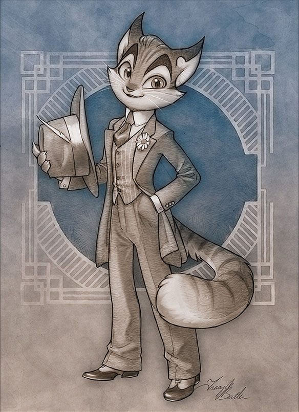

The Artistic Journey of Tracy J. Butler's "Lackadaisy"
I've been following the webcomic Lackadaisy for about 8 years now, and am always blown away by Tracy Butler's artistic prowess. If you are unfamiliar with this comic, the story follows the anticts of two warring speakeasys during the 1920's, with the added twist that everyone is a cat. Without seeing the comic, that might sound cheesy, but she pulls it off in an impressive manner.
One of the most interesting things about her comic is just how much the art changes from beginning to end. She started drawing the comic in pencil with a sepia tone laid in digitally, and gradually progressed to a full-color painted look.
Going even further, she is now turning the comic into an animated series. You can see a short preview here